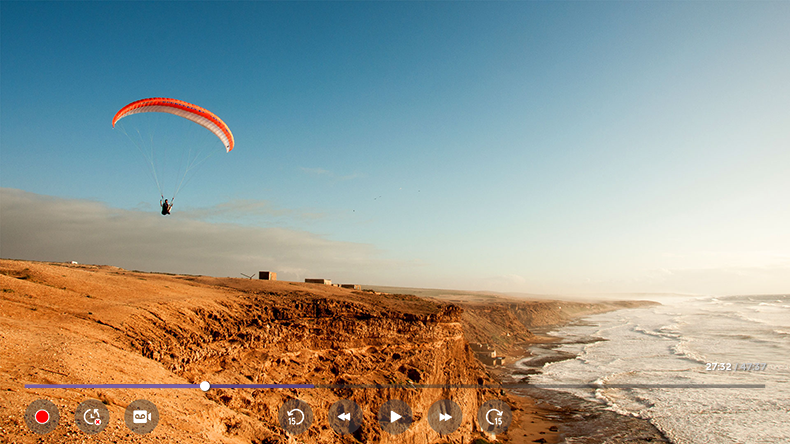

Uso de Live Playback (reproducción en tiempo real)
Se trata de una función que puede utilizar para guardar temporalmente el programa que esté viendo actualmente en una unidad de disco duro USB, de manera que pueda reproducir cualquier escena que pudiera perderse mientras ve la TV. Esta función le permite continuar viendo el programa donde lo haya dejado, por ejemplo, si se ha tenido que ausentar durante un momento.
- Inserte la unidad de disco duro USB en el puerto USB.
- Pulse el botón del mando a distancia o mueva el puntero hasta la parte superior de la pantalla.
- Pulse el botón INICIAR LIVE PLAYBACK en la parte inferior de la pantalla.
-
Mientras ve una retransmisión en directo, seleccione un punto de la barra de progreso con el puntero. También puede pulsar los botones
 /
/  del mando a distancia para utilizar esta función.
del mando a distancia para utilizar esta función.
Seleccione un punto anterior al actual en la barra de progreso.

Seleccione un dispositivo que vaya a utilizar con Live Playback cuando dos o más unidades de disco duro USB estén conectadas a la TV.
No se pueden utilizar memorias USB. Conecte un disco duro USB con una capacidad de almacenamiento total de al menos 80 GB.
Si no queda espacio suficiente en el disco duro USB, es posible que Live Playback no funcione correctamente. Para utilizar la función Live Playback, necesita un disco duro USB con al menos 2.3 GB de almacenamiento.
Se puede utilizar en emisiones analógicas y digitales, así como en el modo de entrada.
No obstante, no se puede utilizar esta opción mientras se escucha un canal de radio.
(Esta función solo está disponible en algunos modelos.)
(Esta función solo está disponible en algunos modelos.)
Los canales conectados a COMPONENT IN o HDMI IN no admiten Live Playback.
(El puerto COMPONENT IN solo está disponible en algunos modelos.)
(El puerto COMPONENT IN solo está disponible en algunos modelos.)
Mediante la función de reproducción en tiempo real, puede retroceder en un programa hasta dos horas, en función de la capacidad restante del disco duro USB.
Este tiempo puede variar en función de la región en la que se encuentre.
Los vídeos guardados en el modo Live Playback se eliminan si apaga la TV sin grabarlos.